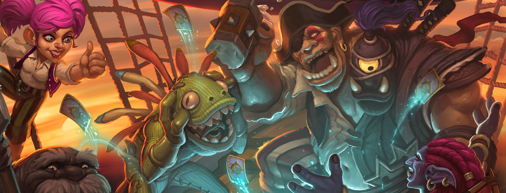

海盗势力PIRATES

海盗帕奇斯
船长因为帕奇斯能眼观六路，耳听八方的能力将其招揽。唯一的问题是，他走过的甲板老是黏糊糊的，清理起来特别麻烦。
“轮到我上场了！”
天空上尉库拉格
骑乘红色鹦鹉，装备颚骨护肩，手持弯钩长枪，头戴海盗船帽。还能有比他更拉风的首领吗？没有！
“哈哈！我来也！”

绿皮船长
要不是因为那些调皮捣蛋的小家伙们，他差点就把那辆超级战舰开进暴风城港口了！
“干了这杯！宝贝儿们！”
船长因为帕奇斯能眼观六路，耳听八方的能力将其招揽。唯一的问题是，他走过的甲板老是黏糊糊的，清理起来特别麻烦。
“轮到我上场了！”
骑乘红色鹦鹉，装备颚骨护肩，手持弯钩长枪，头戴海盗船帽。还能有比他更拉风的首领吗？没有！
“哈哈！我来也！”
要不是因为那些调皮捣蛋的小家伙们，他差点就把那辆超级战舰开进暴风城港口了！
“干了这杯！宝贝儿们！”